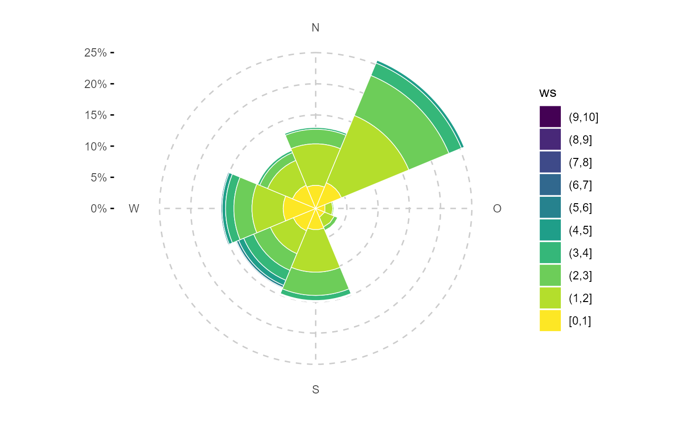
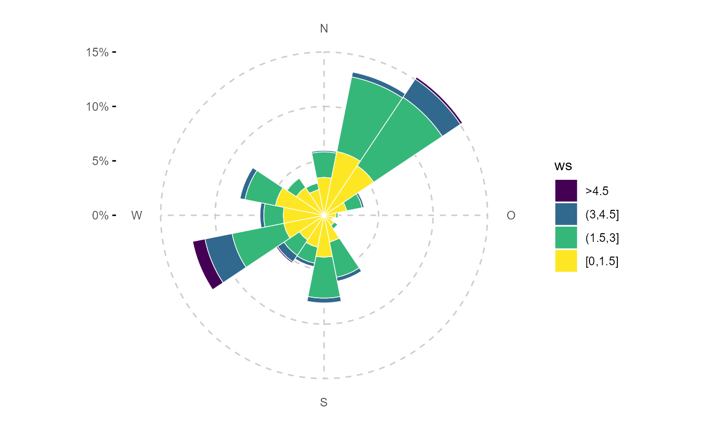
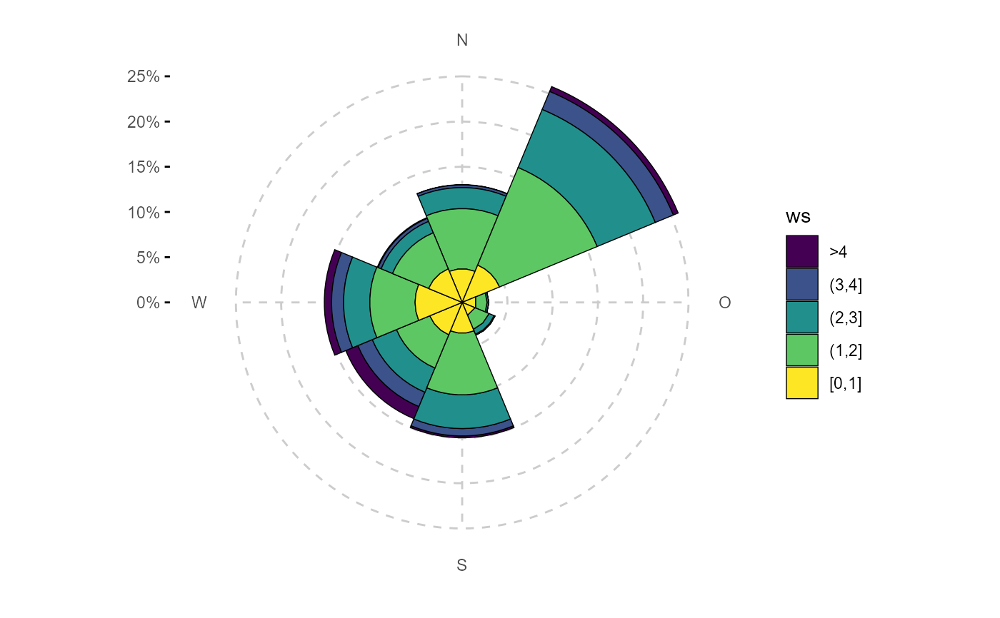
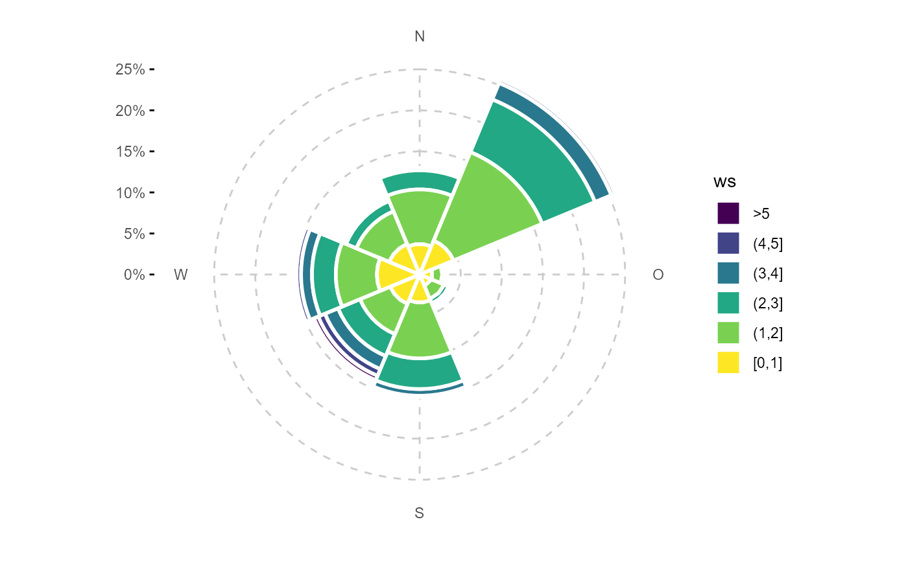
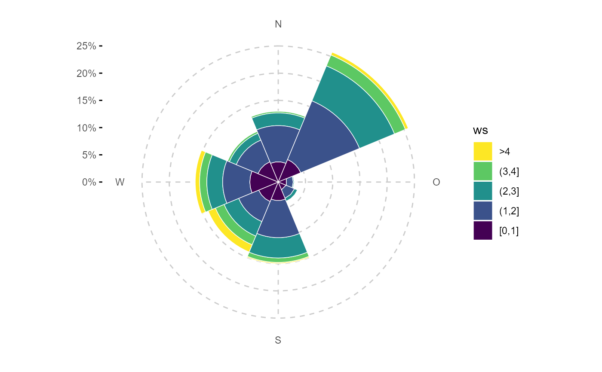
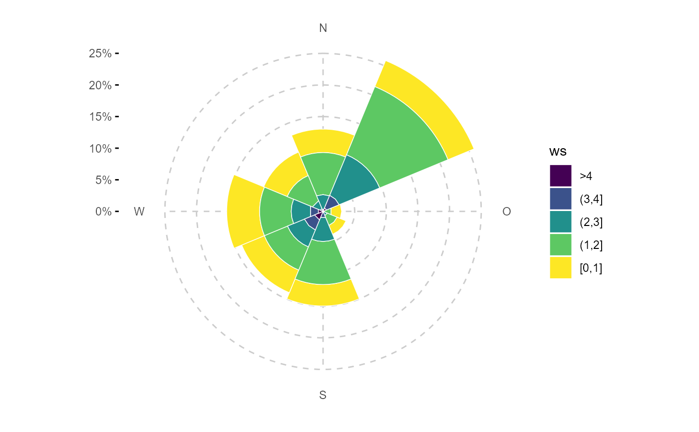

ggplot wrapper to create a windrose (polar wind-bin frequency plot)
Source:R/ggwindrose.R
ggwindrose.Rdggplot wrapper to create a windrose (polar wind-bin frequency plot)
ggwindrose(data, ws, wd, wd_binwidth = 45, ws_binwidth = 1, ws_max = NA, groupings = grp(), fill_scale = scale_fill_viridis_d(), reverse = TRUE, bg = NULL, ...)
Arguments
| data | tibble containing wind speed, wind direction and/or air pollutant concentration data |
|---|---|
| ws | symbol giving the wind velocity column name (wind velocity preferably in m/s) |
| wd | symbol giving the wind direction column name in degrees |
| wd_binwidth | numeric, binwidth for wind direction in °, wd_binwidth should fullfill:
|
| ws_binwidth | numeric, binwidth for wind speed |
| ws_max | numeric, can be NA, wind speed is squished at this value |
| groupings | additional groupings. Use helper |
| fill_scale | ggplot2 discrete fill scale, e.g. |
| reverse | TRUE/FALSE, should wind speed bin factors be sorted descending (TRUE) or ascending (FALSE). Usually for wind roses a descending order (higher wind speed on the outside) is used. |
| bg | raster map, e.g. ggmap object as plot background |
| ... | Other arguments passed on to |
Value
ggplot object
ggplot2::ggplot() object
Examples
library(ggplot2) fn <- rOstluft.data::f("Zch_Stampfenbachstrasse_2010-2014.csv") data <- rOstluft::read_airmo_csv(fn) %>% rOstluft::rolf_to_openair() %>% openair::cutData(date, type = "daylight") ggwindrose(data, ws, wd)# squish ws ggwindrose(data, ws, wd, ws_max = 5)# change binning ggwindrose(data, ws, wd, wd_binwidth = 22.5, ws_binwidth = 1.5, ws_max = 4.5)# don't like bar outlines? ggwindrose(data, "ws", "wd", color = "black", ws_max = 4)# bigger outlines ggwindrose(data, ws, wd, ws_max = 5, size = 1)#>ggwindrose(data, ws, wd, ws_max = 5, alpha = 0.8, bg = bg) + theme( panel.grid.major = element_line(linetype = 2, color = "black", size = 0.5) )# another fill scale ggwindrose(data, ws, wd, ws_max = 5, fill_scale = scale_fill_manual(values = matlab::jet.colors(6)))# reverse the order of ws, but keep the coloring and legend order ggwindrose(data, ws, wd, ws_max = 4, reverse = FALSE, fill_scale = scale_fill_viridis_d(direction = -1))# faceting: important the faceting variable, must also be in grouping! ggwindrose(data, ws, wd, ws_max = 5, groupings = grp(daylight)) + facet_wrap(vars(daylight))# you can use groupings to directly mutate the data for faceting. # in this example we define the groupings external for better # readability groupings = grp( season = cut_season(date, labels = c(DJF = "winter", MAM = "spring", JJA = "summer", SON = "autumn")), year = cut_seasonyear(date, label = "year") ) # only three years for smaller plot size and cut the last december # theming remove the NOSW labels and reduce the y spacing between plots data <- dplyr::filter(data, date < lubridate::ymd(20121201)) ggwindrose(data, ws, wd, ws_max = 3, groupings = groupings) + facet_grid(rows = vars(year), cols = vars(season)) + theme( axis.text.x = element_blank(), panel.spacing.y = unit(0, "pt") )